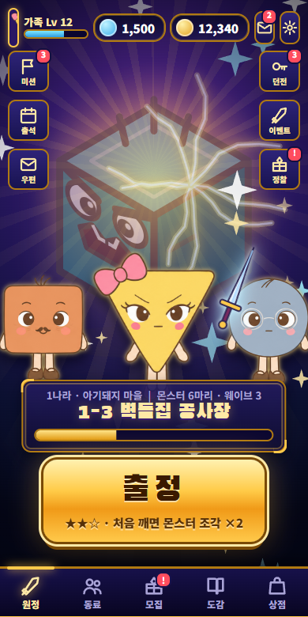
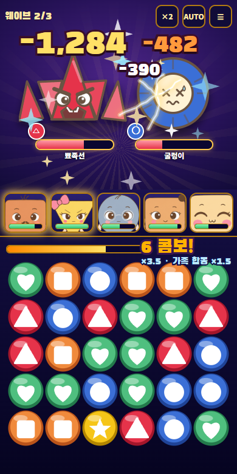
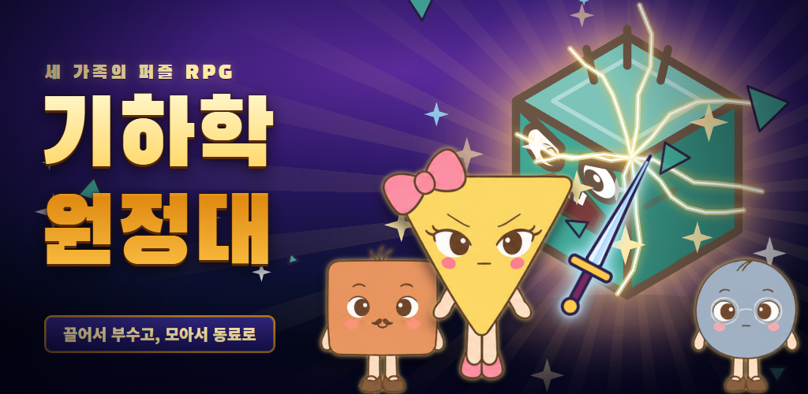

흐트러진 도형의 세계. 구슬을 끌어 큰 콤보를 터뜨리면 몬스터가 산산조각 나고, 정돈된 모습으로 동료가 되어 돌아와요.
실력이 곧 힘 — 잘 끌수록 몬스터가 와장창 부서져요.
구슬을 꾹 눌러 끌어 이으면 터진 묶음마다 동료가 한 발씩 연타. 콤보가 이어질수록 피해가 ×(1+0.5×콤보)로 커져요.
몬스터를 부수면 조각이 모이고, 다 모이면 정돈된 모습으로 확정 합류. 랜덤이 아니라 내 실력으로 모아요.
네모·세모·동그라미 가족이 옛이야기 나라 24곳을 지나요. 나라 대장은 정다면체·원기둥·뫼비우스 같은 입체 몬스터!
진한 단색 구슬, 큼직한 피해 숫자, 한눈에 보이는 무대.



모양이 흐트러진 도형들. 부수면 정돈되어 동료가 돼요. (마우스를 올려 보세요)